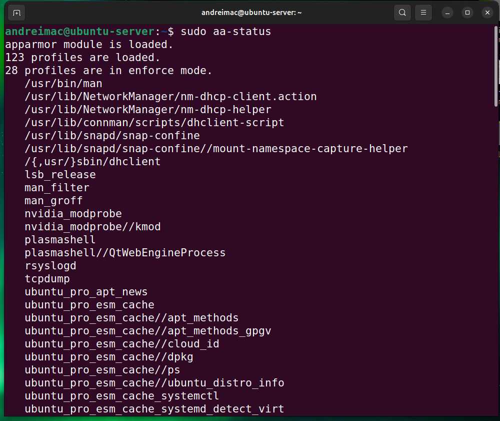
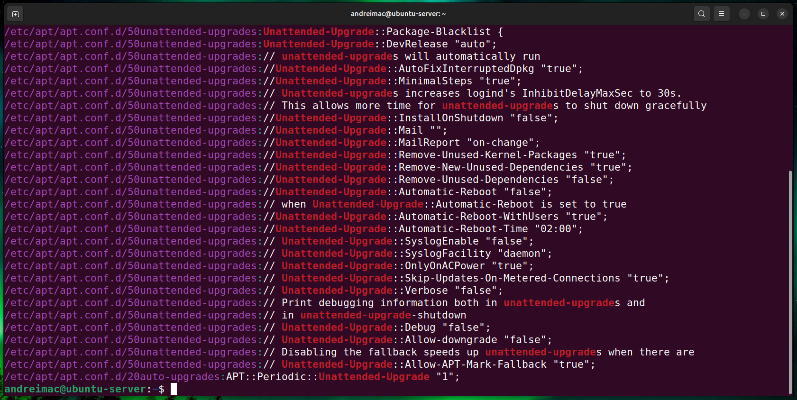
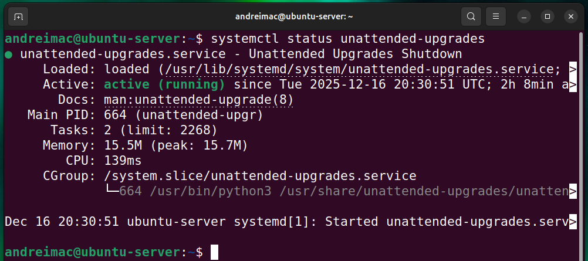
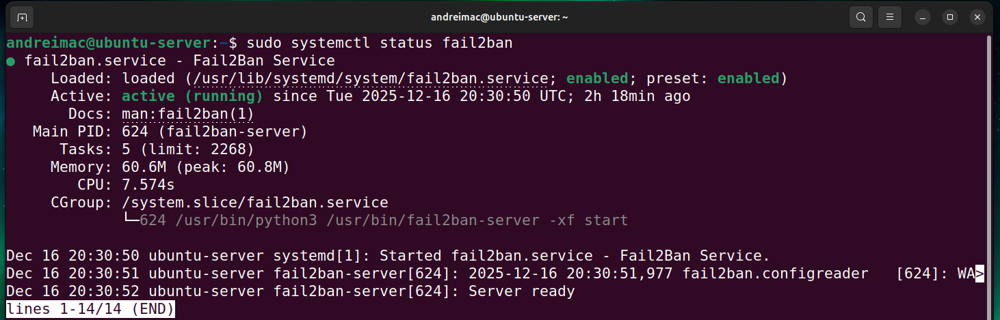
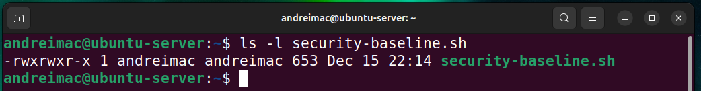
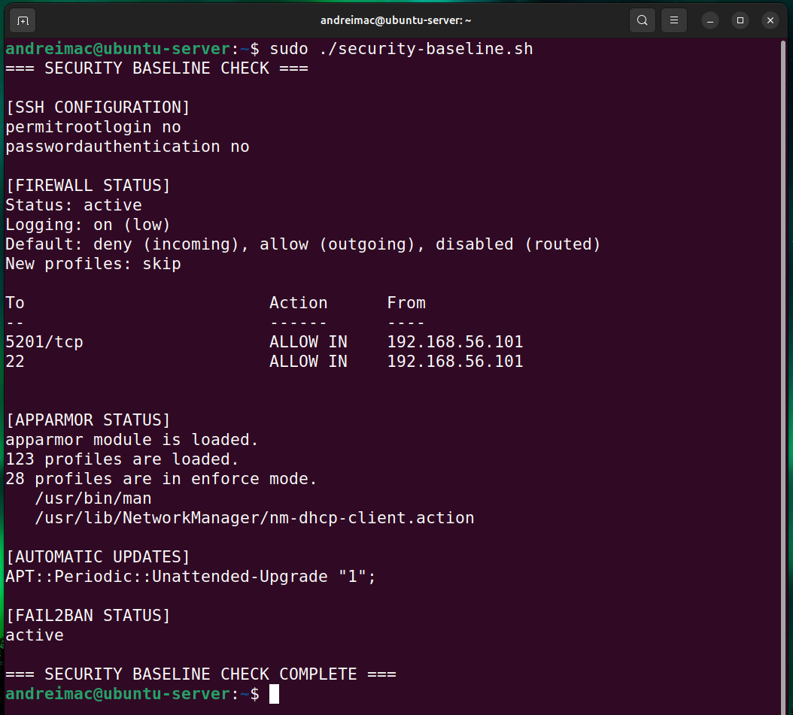
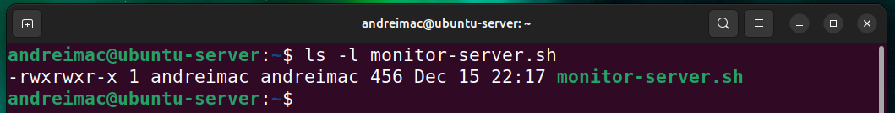
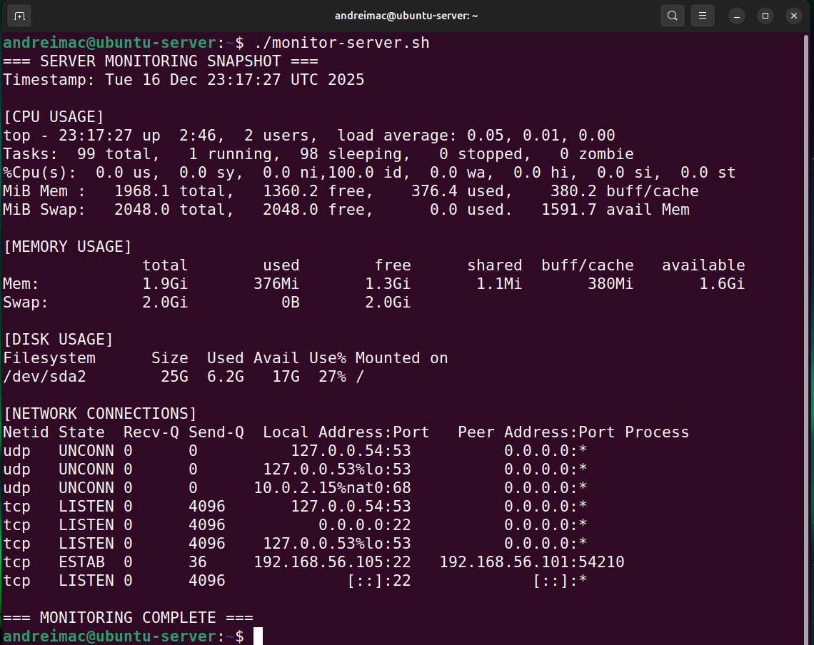

Week 5: Advanced Security and Monitoring Infrastructure
Strengthening server security and enabling remote monitoring capabilities.
Phase 5: Advanced Security and Monitoring Infrastructure (Week 5)
In this phase, advanced security mechanisms and monitoring capabilities were implemented to strengthen the server's defensive posture. Mandatory access control was enforced using AppArmor, automatic security updates were configured, and intrusion prevention was enabled using fail2ban. Additionally, custom scripts were developed to verify the system's security baseline and to remotely monitor server performance via SSH. These measures ensured ongoing security visibility and compliance with best practices.
Deliverables (Journal and Video)
- Implement Access Control.
- Configure automatic security updates.
- Configure fail2ban for enhanced intrusion detection.
- Create a security baseline script.
- Create a remote monitoring script.
1. Implement Access Control
sudo aa-status

AppArmor was verified as the active mandatory access control system on the server. The output confirms that the AppArmor module is loaded and that multiple security profiles are enforced. Enforcing mode ensures that applications are restricted according to defined policies, reducing the potential impact of compromised processes..
2. Configure Automatic Security Updates
sudo apt install unattended-upgrades -y
This command is only required if the unattended-upgrades package has not already been installed on the system.
grep -i "Unattended-Upgrade" -R /etc/apt/apt.conf.d/

Automatic security updates were configured and verified using unattended-upgrades. The configuration confirms that the system periodically applies security patches without manual intervention, reducing exposure to known vulnerabilities and ensuring the server remains up to date..
systemctl status unattended-upgrades

The status of the unattended-upgrades service was verified using systemctl. The output confirms that the service is active and running, ensuring that automatic security updates are applied regularly to mitigate known vulnerabilities without manual intervention.
3. Configure fail2ban for Intrusion Detection
sudo apt install fail2ban -y
The fail2ban service was already installed and configured on the system; therefore, only the service status was verified to confirm that intrusion prevention was active.

The status of the fail2ban service was verified using systemctl. The output confirms that fail2ban is active and running, providing intrusion prevention by monitoring authentication logs and blocking malicious access attempts.
4. Security BaselineScript
ls -l security-baseline.sh

This command verifies that the security-baseline.sh script exists on the server and has executable permissions. The presence of execute permissions confirms that the script can be run directly via SSH, satisfying the requirement for automated verification of security controls implemented in Phases 4 and 5.
sudo ./security-baseline.sh

A custom security-baseline.sh script was executed on the server via SSH to verify all security configurations implemented in Phases 4 and 5. The script confirms SSH hardening, firewall enforcement, active AppArmor profiles, enabled automatic security updates, and operational intrusion prevention using fail2ban. This provides automated and repeatable validation of the server's security posture.
5. Remote Monitoring Script (monitor-server.sh)
ls -l monitor-server.sh

This command verifies that the monitor-server.sh script exists on the server and has executable permissions. The script is designed to collect performance and system metrics remotely via SSH, enabling ongoing monitoring of server behaviour from the workstation.
./monitor-server.sh

The monitor-server.sh script was executed remotely via SSH to collect live performance and system metrics from the server. The output includes CPU usage, memory utilisation, disk usage, and active network connections, providing real-time insight into server performance and operational status. This demonstrates effective remote monitoring capability from the workstation.
Reflection
This week pushed the server beyond basic hardening and into a more maintainable security model. AppArmor, unattended-upgrades and fail2ban each strengthened different layers of defence, but the real shift was seeing how they work together: access control restricting what services can do, automated patching reducing exposure, and intrusion detection reacting to hostile behaviour.
Building the two scripts clarified this even further. The security baseline script turned abstract “checks” into a repeatable verification process I can run any time the system changes. The monitoring script created a simple way to observe performance remotely without touching the server console. Together they made the setup feel more like a system that can be operated and trusted over time, not just configured once.
References
- [1] Canonical, “AppArmor — Mandatory Access Control,” Ubuntu Documentation. Available: https://ubuntu.com/server/docs/security-apparmor. Accessed: Nov. 2025.
- [2] Fail2ban, “Fail2ban Intrusion Prevention Framework Documentation.” Available: https://fail2ban.readthedocs.io/. Accessed: Nov. 2025.